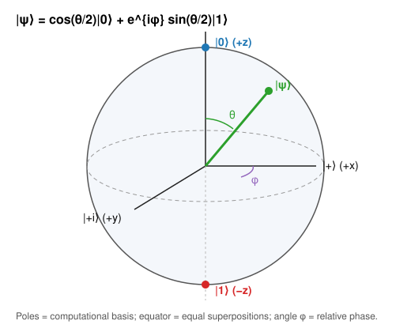
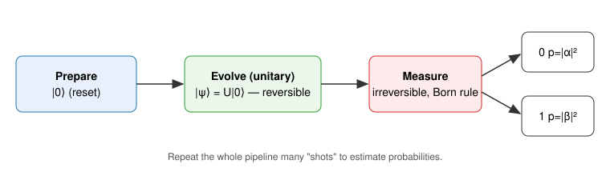
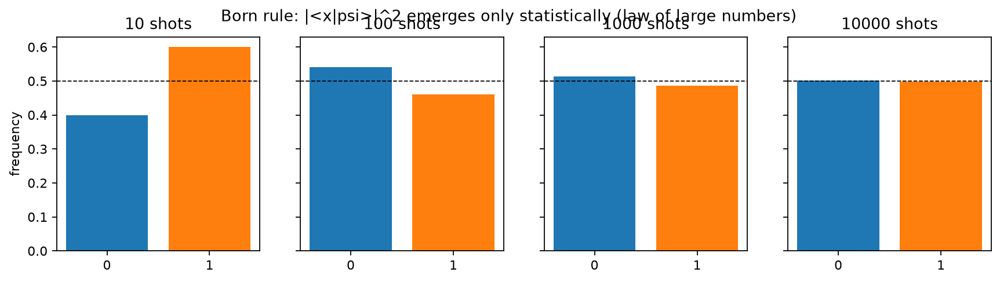
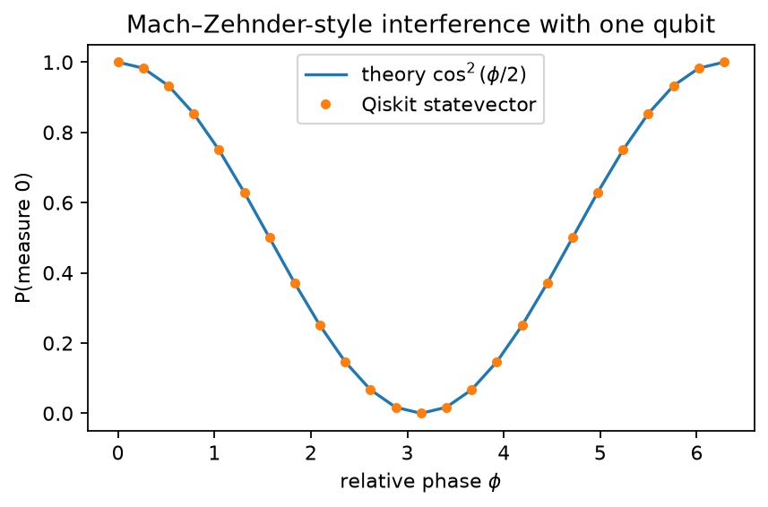

Chapter 1 — Qubits, Gates, Measurement, Bloch Sphere
A qubit is a list of two complex numbers. A gate is a 2×2 matrix that transforms that list. That is all of it — later chapters just scale it up.
How to use this page. Five interactive demos (drag the spheres to rotate the camera) sit right after the concepts they illustrate. Every symbol is explained the first time it appears; the full list is in the notation cheat sheet. Run the Python versions with
uv run python 01-qubits-and-gates/code/01_bloch_sphere.py and 02_measurement_qiskit.py.
0. Math Survival Kit (≈ 20 min)
You need only four ideas: complex numbers, vectors, matrices, probabilities. Think of them as data types.
0.1 Complex Numbers
A complex number is a pair of floats $(a, b)$ written $z = a + bi$, where $i$ is a special value with $i^2 = -1$. Python: z = 3 + 4j.
| Symbol | Read as | Meaning | Python |
|---|---|---|---|
| $z = a+bi$ | “z equals a plus b i” | real part $a$, imaginary part $b$ | complex(a, b) |
| $\bar z$ or $z^*$ | “z conjugate” | flip sign of the imaginary part: $\overline{a+bi}=a-bi$ | z.conjugate() |
| $\lvert z\rvert$ | “magnitude of z” | length of the pair: $\sqrt{a^2+b^2}$ | abs(z) |
| $\lvert z\rvert^2$ | “magnitude squared” | $a^2+b^2 = z\bar z$ — always real and ≥ 0 | abs(z)**2 |
| $e^{i\varphi}$ | “e to the i phi” | a point on the unit circle at angle $\varphi$: $\cos\varphi + i\sin\varphi$. Length always 1 — it is just a rotation by $\varphi$ | cmath.exp(1j*phi) |
Mental picture: a complex number is an arrow in a 2D plane. $\lvert z\rvert$ is its length, its angle is its phase. Multiplying by $e^{i\varphi}$ rotates the arrow without changing its length. Key values: $e^{i0}=1$, $e^{i\pi/2}=i$, $e^{i\pi}=-1$, $e^{i2\pi}=1$. Greek letters are just variable names: $\alpha$ alpha, $\beta$ beta, $\theta$ theta, $\varphi,\phi$ phi, $\lambda$ lambda, $\gamma$ gamma. Angles are in radians ($\pi$ = half turn = 180°).
Demo 1Complex-Number Playground
Click or drag in the plane to move $z$. The slider multiplies it by $e^{i\varphi}$ (a pure rotation: the length never changes).
0.2 Vectors and the “Ket” Notation
A vector is an array of numbers. Physicists draw a column and name it with a funny bracket called a ket:
$$|\psi\rangle \;=\; \begin{pmatrix}\alpha\\ \beta\end{pmatrix} \;\;\leftrightarrow\;\; \texttt{psi = np.array([alpha, beta])}$$- $|\cdot\rangle$ is read “ket”. $|\psi\rangle$ = “ket psi” = the vector named psi. The bar and angle bracket are decoration saying “this is a quantum state vector”. Inside you can put any label: $|0\rangle$, $|1\rangle$, $|+\rangle$.
- $|0\rangle = \begin{pmatrix}1\\0\end{pmatrix}$ and $|1\rangle = \begin{pmatrix}0\\1\end{pmatrix}$ are the two basis vectors (like unit vectors $\hat x,\hat y$). Any state is a mix of them: $|\psi\rangle = \alpha|0\rangle + \beta|1\rangle$. Read: “psi is alpha times ket-zero plus beta times ket-one”. $\alpha,\beta$ are called amplitudes.
- Bra $\langle\psi|$ (“bra psi”) = the same vector as a row and complex-conjugated: $\langle\psi| = (\bar\alpha,\ \bar\beta)$. numpy:
psi.conj(). - Bra-ket $\langle\phi|\psi\rangle$ = bra times ket = a single number, the inner product (generalised dot product):
np.vdot(phi, psi). If it is 0 the states are orthogonal (perfectly distinguishable). $\langle\psi|\psi\rangle = 1$ for a valid state. Example: $\langle 0|1\rangle = 1\cdot0 + 0\cdot1 = 0$; $\langle 0|0\rangle = 1$. - Ket-bra $|\phi\rangle\langle\psi|$ = column times row = a 2×2 matrix (outer product,
np.outer). E.g. $|0\rangle\langle0| = \begin{pmatrix}1&0\\0&0\end{pmatrix}$. - Normalised means total length 1: $\langle\psi|\psi\rangle = |\alpha|^2+|\beta|^2 = 1$. Why 1? Because those squares will be probabilities, and probabilities sum to 1.
0.3 Matrices and Operators
A gate is a 2×2 matrix $U$. Applying it is matrix–vector multiplication: $|\psi'\rangle = U|\psi\rangle$ = U @ psi. Applying $U$ then $V$ is $VU|\psi\rangle$ — right to left, like function composition $V(U(x))$.
| Symbol | Read as | Meaning | numpy |
|---|---|---|---|
| $U^\dagger$ | “U dagger” | conjugate transpose (flip rows/cols, conjugate every entry) | U.conj().T |
| $U^\dagger U = I$ | “U is unitary” | $U^\dagger$ undoes $U$; length is preserved. Every quantum gate is unitary ⇒ gates are reversible rotations. | np.allclose(U.conj().T@U, np.eye(2)) |
| $I$ | identity | does nothing | np.eye(2) |
| $\langle\psi\vert M\vert\psi\rangle$ | “expectation of M in psi” | row · matrix · column = one number | psi.conj() @ M @ psi |
| $\sum$ | sum | a for-loop adding terms | sum(...) |
| $\otimes$ | tensor product | combine systems (Chapter 2) | np.kron |
0.4 Probability Basics
- A probability $p\in[0,1]$ (“p is in the range 0 to 1”); all outcomes sum to 1.
- Expectation value (average) of a ±1 outcome: $\langle P\rangle = p(+1)\cdot(+1) + p(-1)\cdot(-1)$.
- Law of large numbers: with $N$ samples (“shots”) the estimated frequency has error $\approx 1/\sqrt N$. 100 shots ≈ ±10 %, 10 000 shots ≈ ±1 %.
1. The Engineer’s Mental Model
| Classical | Quantum |
|---|---|
| bit ∈ {0, 1} | qubit = np.array([α, β]) with abs(α)**2 + abs(β)**2 == 1 |
| gates (AND, OR…) mostly irreversible | gate = unitary matrix → always reversible |
| reading a bit is free and repeatable | measurement gives 0/1 randomly with probabilities from the amplitudes, and destroys the superposition |
| state is a value | state is a vector of complex amplitudes that can cancel (“interference”) |
Quantum computing in one sentence: evolve amplitudes with unitary matrices so that wrong answers' amplitudes cancel and right ones add up, then measure.
2. State of One Qubit
$$|\psi\rangle = \alpha|0\rangle + \beta|1\rangle,\qquad |\alpha|^2+|\beta|^2 = 1$$Read: "a qubit is a combination (superposition) of 0 and 1 with complex weights; the squared magnitudes of the weights add to 1".
- Measuring gives 0 with probability $|\alpha|^2$ and 1 with probability $|\beta|^2$ (the Born rule, §5).
- $|+\rangle = \tfrac{1}{\sqrt2}|0\rangle + \tfrac{1}{\sqrt2}|1\rangle$ (“ket plus”): a 50/50 coin. $\tfrac1{\sqrt2}\approx0.707$ and $0.707^2=0.5$.
- $|-\rangle = \tfrac1{\sqrt2}|0\rangle - \tfrac1{\sqrt2}|1\rangle$ is also 50/50 when measured, but a different state — the minus sign (a relative phase) matters later.
Global vs. Relative Phase (Important)
- Global phase: multiply the whole vector by $e^{i\gamma}$. Probabilities don't change ($|e^{i\gamma}\alpha|^2=|\alpha|^2$), nothing can ever detect it. Ignore it: $|\psi\rangle\sim e^{i\gamma}|\psi\rangle$ (“is physically equivalent to”).
- Relative phase: a phase between $\alpha$ and $\beta$, e.g. $\alpha|0\rangle+e^{i\varphi}\beta|1\rangle$. Invisible when measuring right now, but it changes the outcome of later gates through interference (§6). Think “hidden state that only shows up after another $H$”.
Counting parameters: 2 complex numbers = 4 reals; minus normalisation = 3; minus global phase = 2 real parameters → fits on the surface of a sphere (two angles). That sphere is next.
3. The Bloch Sphere — a Map of All Single-Qubit States

Every state can be written with two angles:
$$|\psi\rangle = \cos\tfrac{\theta}{2}\,|0\rangle + e^{i\varphi}\,\sin\tfrac{\theta}{2}\,|1\rangle$$- $\theta\in[0,\pi]$ (“theta”) = latitude measured from the north pole. $\theta=0$ → $|0\rangle$ (north), $\theta=\pi$ → $|1\rangle$ (south). Sets the 0/1 probabilities.
- $\varphi\in[0,2\pi)$ (“phi”) = longitude = the relative phase. Doesn't affect 0/1 probabilities.
- The half-angle $\theta/2$ appears because orthogonal states ($|0\rangle,|1\rangle$) are 90° apart in vector space but 180° apart on the sphere.
The arrow's position is $\vec r=(x,y,z)=(\sin\theta\cos\varphi,\ \sin\theta\sin\varphi,\ \cos\theta)$. Equivalently $x=\langle X\rangle$, $y=\langle Y\rangle$, $z=\langle Z\rangle$ — the expectation values of the Pauli matrices of §4, i.e. “the average result of measuring along that axis”.
| State | Where | Vector |
|---|---|---|
| $\lvert0\rangle$, $\lvert1\rangle$ | north / south pole (±z) | $(1,0)$, $(0,1)$ |
| $\lvert+\rangle$, $\lvert-\rangle$ | ±x | $(1,\pm1)/\sqrt2$ |
| $\lvert{+i}\rangle$, $\lvert{-i}\rangle$ | ±y | $(1,\pm i)/\sqrt2$ |
Rules of thumb: opposite points on the sphere = orthogonal states. Equator = 50/50 outcomes in the Z basis. The sphere only works for one qubit.
Demo 2State Explorer
Move θ and φ and watch amplitudes, probabilities and the arrow. Then slide γ (global phase): the amplitudes change but nothing else does.
4. Gates = Unitary Matrices = Rotations
A gate moves the state arrow elsewhere on the sphere. Because it must preserve length it can only rotate it.
4.1 Pauli Gates
$$X=\begin{pmatrix}0&1\\1&0\end{pmatrix},\qquad Y=\begin{pmatrix}0&-i\\i&0\end{pmatrix},\qquad Z=\begin{pmatrix}1&0\\0&-1\end{pmatrix}$$Reading a matrix: row 1 = $(a,b)$, row 2 = $(c,d)$; the result of $M\binom{\alpha}{\beta}$ is $\binom{a\alpha+b\beta}{c\alpha+d\beta}$.
- $X$ swaps the entries → $X|0\rangle=|1\rangle$. It's the quantum NOT. A 180° rotation about the x axis.
- $Z$ keeps $\alpha$ and flips the sign of $\beta$ → $Z|0\rangle=|0\rangle$, $Z|1\rangle=-|1\rangle$. “Phase flip”. 180° about z. Invisible on $|0\rangle$ but turns $|+\rangle$ into $|-\rangle$.
- $Y$: both at once (with an $i$). 180° about y.
4.2 Hadamard and Phase Gates
$$H=\frac{1}{\sqrt2}\begin{pmatrix}1&1\\1&-1\end{pmatrix},\quad S=\begin{pmatrix}1&0\\0&i\end{pmatrix},\quad T=\begin{pmatrix}1&0\\0&e^{i\pi/4}\end{pmatrix},\quad P(\phi)=\begin{pmatrix}1&0\\0&e^{i\phi}\end{pmatrix}$$- $H$ (Hadamard) — the “make a superposition” gate. $H|0\rangle=|+\rangle$, $H|1\rangle=|-\rangle$, and $H|+\rangle=|0\rangle$ (it undoes itself). Rotates the sphere so that z ↔ x.
- $P(\phi)$, $S$, $T$ rotate around the z axis by angle $\phi$ ($S$ = 90°, $T$ = 45°). They change relative phase only. Used for interference.
Notation: $\frac1{\sqrt2}$ in front of a matrix scales every entry; $\sqrt2$ = np.sqrt(2).
4.3 Identities
$HZH = X$ means “H, then Z, then H, is the same as X” (read the product right to left). Meaning: $H$ is a change of viewpoint (z ↔ x), so a Z-flip seen from the other viewpoint is an X-flip. You'll use this basis-change trick constantly.
4.4 Rotation Gates
$$R_P(\theta)=e^{-i\theta P/2}=\cos\tfrac\theta2\,I-i\sin\tfrac\theta2\,P\qquad (P\in\{X,Y,Z\})$$- Reads “rotate by angle $\theta$ about axis $P$”. The exponential of a matrix is defined by its power series; for Paulis (which square to $I$) it collapses to the cos/sin formula on the right.
scipy.linalg.expm(-1j*theta/2*P)gives the same. - This is the parametrised gate of variational algorithms: $\theta$ is the knob you will optimise.
- Any single-qubit gate is three rotations: $U = e^{i\gamma}R_z(\phi)R_y(\theta)R_z(\lambda)$ (Euler angles, like yaw/pitch/roll). It is Qiskit's
U(θ, φ, λ)gate.
Subtlety: $R_x(2\pi)=-I$ — a full turn on the sphere returns to the same point, but the vector is multiplied by $-1$ (a global phase, unobservable). The vector needs $4\pi$ to return exactly.
Demo 3Gate Lab — Gates Are Rotations
Click gates to apply them in sequence (right-multiplied as matrices, shown below). The orange trail is the path the arrow takes. Try H, Z, H from |0⟩: you end at |1⟩, exactly what $X$ does.

5. Measurement (the Born Rule)
Measure in the computational (Z) basis:
$$p(x)=|\langle x|\psi\rangle|^2,\quad x\in\{0,1\}$$Read: “the probability of seeing $x$ is the squared magnitude of the inner product of $|x\rangle$ with the state”. For $|\psi\rangle=\alpha|0\rangle+\beta|1\rangle$: $\langle0|\psi\rangle=\alpha$, so $p(0)=|\alpha|^2$ — exactly what we said. After seeing $x$, the state collapses to $|x\rangle$ (the superposition is gone; measuring again gives the same $x$).

Measuring in another basis (say X): apply a gate that rotates that axis onto z, then measure normally. For X: apply $H$, then measure. (Hardware only measures Z; everything else is “rotate, then measure”.)
Shots: one run gives one random bit, so you run the circuit $N$ times (a “shot” = one run) and collect counts like {'0': 512, '1': 488}. Estimated $p(0)\approx 512/1000$, error $\sim1/\sqrt N$.
Expectation value of a Pauli $P$ (eigenvalues ±1): $\langle P\rangle=\langle\psi|P|\psi\rangle=p(+1)-p(-1)$. This is what Qiskit's Estimator returns and what VQE (Ch. 8) minimises.
Demo 4Shot-Noise Lab
Prepare a state, pick a measurement basis, then fire shots. The lower chart shows the running estimate converging (log x-axis) inside the ±2/√N band.

6. Interference — Why Quantum Is Not Just “Random Bits”
6.1 The Puzzle
Take a classical fair coin and flip it twice in a row. Whatever you do in between, the result is 50/50: randomness never “un-randomises”.
Now do the quantum version: start at $|0\rangle$, apply $H$ (a “fair coin flip”: measuring now gives 50/50), then apply $H$ again without measuring. Result: always 0, 100 %. The matrix product explains it, $HH=I$, but the intuition is the real lesson: the first $H$ was not a coin flip. It created two amplitudes, and the second $H$ made them cancel.
Common misconception. “A superposition is a coin that has been flipped but not looked at yet.” That is wrong. If it were only ignorance about a hidden 0 or 1, a second $H$ could not bring back a certain 0. The qubit really carries both amplitudes, and amplitudes behave like waves.
6.2 The One Rule: Add Amplitudes, Then Square
| Classical probabilities | Quantum amplitudes | |
|---|---|---|
| Several ways to reach an outcome | add the probabilities: $p=p_1+p_2$ | add the amplitudes first: $a=a_1+a_2$, then $p=\lvert a\rvert^2$ |
| Can contributions cancel? | No — probabilities are $\ge 0$ | Yes — amplitudes are complex, e.g. $+\tfrac12$ and $-\tfrac12$ |
Analogy: two water ripples meeting. Crest + crest = a bigger wave (constructive interference). Crest + trough = flat water (destructive interference). Noise-cancelling headphones play a sound that is the exact opposite of the noise so the two waves cancel. In quantum computing the “waves” are amplitudes, and the phase $e^{i\phi}$ says where in its cycle each one is — see the complex-number arrow picture in Demo 1.
6.3 Step by Step: $H$, then $P(\phi)$, then $H$
Here $P(\phi)=\mathrm{diag}(1,e^{i\phi})$ is the phase gate from §4.2: it leaves $|0\rangle$ alone and multiplies the $|1\rangle$ amplitude by $e^{i\phi}$ (rotates its arrow by $\phi$). Start in $|0\rangle$.
- First $H$: $|0\rangle\ \to\ \tfrac1{\sqrt2}|0\rangle+\tfrac1{\sqrt2}|1\rangle$. Two amplitudes, each $\tfrac1{\sqrt2}\approx0.707$.
- Phase gate: $\to\ \tfrac1{\sqrt2}|0\rangle+\tfrac{e^{i\phi}}{\sqrt2}|1\rangle$. Probabilities are still 50/50 (the arrow only rotated, its length is unchanged). The information is now hidden in the relative phase.
- Second $H$: recall $H|0\rangle=\tfrac1{\sqrt2}(|0\rangle+|1\rangle)$ and $H|1\rangle=\tfrac1{\sqrt2}(|0\rangle-|1\rangle)$. Now there are two routes to finish in $|0\rangle$:
- route A: be in $|0\rangle$ after step 2 (amplitude $\tfrac1{\sqrt2}$), then $H$ sends $|0\rangle\to|0\rangle$ with amplitude $\tfrac1{\sqrt2}$ ⇒ contribution $\tfrac12$;
- route B: be in $|1\rangle$ (amplitude $\tfrac{e^{i\phi}}{\sqrt2}$), then $H$ sends $|1\rangle\to|0\rangle$ with amplitude $+\tfrac1{\sqrt2}$ ⇒ contribution $\tfrac{e^{i\phi}}2$.
Plug in three values of $\phi$ (the symbol $\phi$ is the phase angle from §0.1):
| $\phi$ | $e^{i\phi}$ | route A + route B for $\lvert0\rangle$ | $p(0)$ | What happens |
|---|---|---|---|---|
| $0$ | $1$ | $\tfrac12+\tfrac12=1$ | 1 | arrows align → constructive → always 0 |
| $\pi/2$ | $i$ | $\tfrac12+\tfrac i2$, length$^2=\tfrac12$ | 0.5 | arrows at 90° → partial → 50/50 |
| $\pi$ | $-1$ | $\tfrac12-\tfrac12=0$ | 0 | arrows opposite → destructive → always 1 |
6.4 Why This Matters
Earlier (§2) we said relative phase is invisible to a direct measurement. Interference is how you make it visible: sandwich a phase between two $H$ gates and it turns into a measurable 0/1 probability. Every quantum algorithm uses this pattern:
- Superpose — $H$ puts all candidate answers in play at once;
- Mark with phases — gates attach phases that depend on the answer (this is where the “computation” happens);
- Interfere — a second layer of gates makes wrong answers’ amplitudes cancel and the right one’s add up;
- Measure — the right answer now has high probability.
Grover search, Shor’s algorithm and phase estimation (Chapters 4–6) are this recipe with a cleverer middle step. Quantum computers don’t “try all answers in parallel and read the best”; they steer amplitudes so that only the good ones survive.
6.5 How to Use the Demo
- Left canvas: the amplitude of $|0\rangle$ is the sum of two arrows of length ½ (route A in blue, route B in orange, placed tip to tail). The green dashed arrow is their sum; $p(0)$ is its length squared.
- Drag φ from 0 to 1 π: the orange arrow swings around until it points straight back, and the sum shrinks to zero. That’s destructive interference.
- The table under the canvases shows the state after each gate, with numbers.
Demo 5Interference: Adding Two Arrows
Left: the amplitude of |0⟩ is the sum of two arrows of length ½ (one per “path”); the second is rotated by φ. Right: its squared length is the probability.

7. Qiskit Cheat Sheet
from qiskit import QuantumCircuit
from qiskit.quantum_info import Statevector, Operator
from qiskit_aer import AerSimulator
qc = QuantumCircuit(1)
qc.h(0); qc.s(0); qc.rx(0.3, 0) # gates, applied in order (left→right in the circuit)
Statevector(qc) # exact amplitudes (simulation only! real HW can't give this)
Operator(qc).data # the 2x2 matrix of the whole circuit
qc.measure_all()
AerSimulator().run(qc, shots=1000).result().get_counts()A circuit diagram reads left to right in time, but the equivalent matrix product is written right to left: circuit H → Z → H = matrix $H\,Z\,H$ (same here by symmetry; not in general).

8. Exercises (60–90 min)
- Prove by matrix multiplication (4 entries each) that $HXH=Z$ and $HYH=-Y$; then verify with
Operator. (Check with Demo 3 too.) - Predict the Bloch vector of $\sqrt X$ applied to $|0\rangle$ (
qc.sx(0)), then check. - Starting at $|0\rangle$ and using only $H$ and $S$, find the shortest sequence reaching $|-i\rangle$.
- Measure in the X basis a qubit prepared as $R_y(\pi/3)|0\rangle$; compare frequencies to $\langle X\rangle=\sin(\pi/3)$. (Demo 4: θ = ⅓, φ = 0, basis X.)
- Write a 1-qubit simulator in plain NumPy: state vector, gate matrices,
np.random.choice([0,1], p=...)sampling. ~20 lines. - (Hard) Explain why every unitary 2×2 matrix equals the Euler form $e^{i\gamma}R_zR_yR_z$.
9. Resources
- Nielsen & Chuang §1.1–1.3, §2.1–2.2.
- Qiskit: Basics of quantum information
- Quantum Country — best gentle intro.
- 3Blue1Brown — Essence of Linear Algebra (vectors, matrices as transformations; ~1 h, hugely useful).
- 3Blue1Brown — Euler's formula / complex numbers videos
- Interactive Bloch sphere · Quirk circuit simulator
- LaTeX summary (chapter01.tex)
Checklist Before “Next”
- Can explain $|\psi\rangle$, $\langle\psi|$, $\langle\phi|\psi\rangle$, $U^\dagger$ in numpy terms.
- Can say why global phase is irrelevant but relative phase is not.
- Can name the gate that sends $|0\rangle$ to each of $|\pm\rangle,|\pm i\rangle$.
- Can compute $p(x)$ for any state.
- Ran both scripts; did exercises 1, 4, 5.